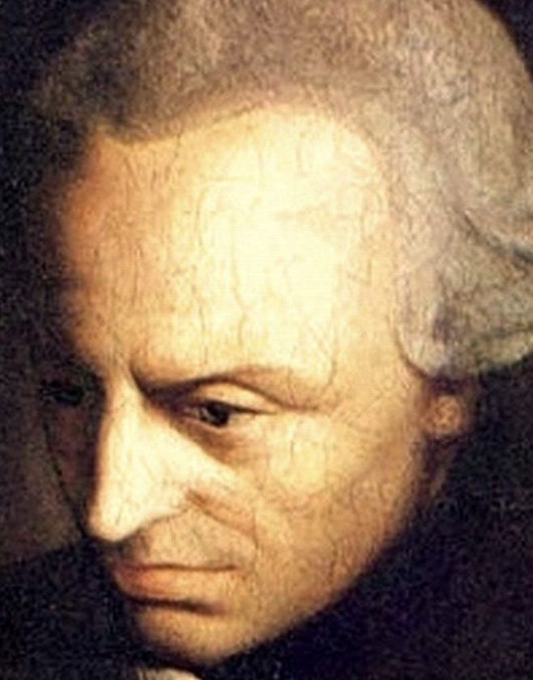
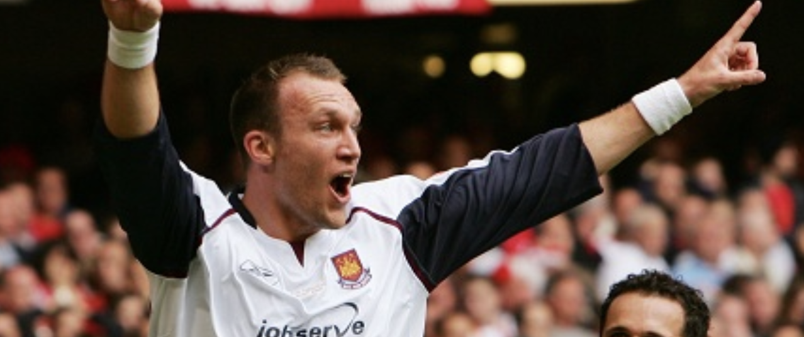
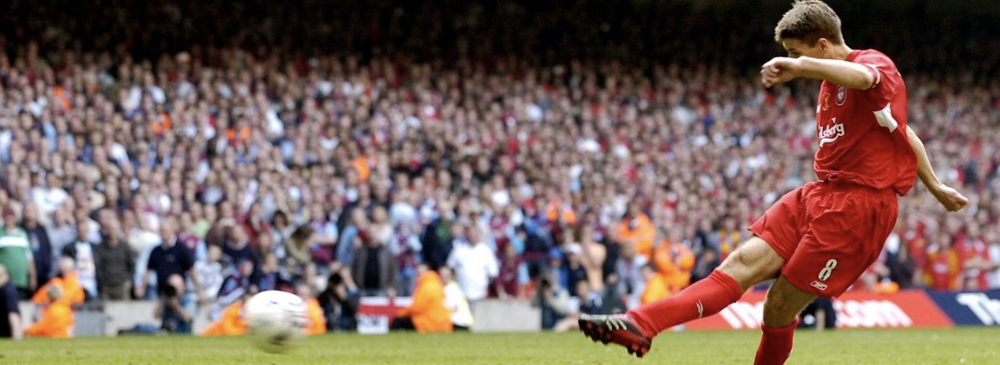
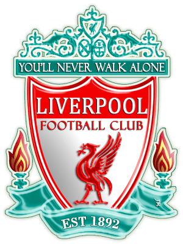

Text
 Enlightenment is man's emergence from his self-imposed nonage. Nonage is the inability to use one's own understanding without another's guidance. This nonage is self-imposed if its cause lies not in lack of understanding but in indecision and lack of courage to use one's own mind without another's guidance. Dare to know!
Sapere aude. "Have the courage to use your own understanding," is therefore the motto of the enlightenment.
Thus it is very difficult for the individual to work himself out of the nonage which has become almost second nature to him. He has even grown to like it, and is at first really incapable of using his own understanding because he has never been permitted to try it. Dogmas and formulas, these mechanical tools designed for reasonable use--or rather abuse--of his natural gifts, are the fetters of an everlasting nonage. The man who casts them off would make an uncertain leap over the narrowest ditch, because he is not used to such free movement. That is why there are only a few men who walk firmly, and who have emerged from nonage by cultivating their own minds.
Table
| Team Name | First Half | Second Half | |
|---|---|---|---|
|  |  | Final | |
| Liverpool FC | 1 Cisse 32' | 2 Gerrard 54', 90' | 3 OT: 3 |
| West Ham United FC | 2 Carragher 21', Ashton 28' | 1 Konchesky 64' | 3 OT: 1 |
List
2006 FA Cup Final
- 
Liverpool Football Club
- Manager
- Rafael Benítez
- Goalkeeper
- Pepe Reina
- Right Back
- Steve Finnan
- Center Back
- Jamie Carragher
- Sami Hyypiä
- Left Back
- John Arne Riise
- Right Midfield
- Steven Gerrard (Captain)
- Center Midfield
- Xabi Alonso
- Mohamed Sissoko
- Left Midfield
- Harry Kewell
- Center Forward
- Peter Crouch
- Djibril Cissé

West Ham United Football Club
- Manager
- Goalkeeper
- Pepe Reina
- Right Back
- Steve Finnan
- Center Back
- Jamie Carragher
- Sami Hyypiä
- Left Back
- John Arne Riise
- Right Midfield
- Steven Gerrard (Captain)
- Center Midfield
- Xabi Alonso
- Mohamed Sissoko
- Left Midfield
- Harry Kewell
- Center Forward
- Peter Crouch
- Djibril Cissé